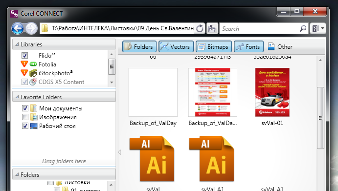

Thumbnail в CorelX5
kosttan / 27.01.2011, 19:43/00:41
Форум:
Ну пачиму Х5 не показывает эскизы.
В Х3 при выборочной установке ставишь галочку напротив Thumbnail и вуаля.
А в пятом этой галочки нет. Ихде она?????
Ну пачиму Х5 не показывает эскизы.
В Х3 при выборочной установке ставишь галочку напротив Thumbnail и вуаля.
А в пятом этой галочки нет. Ихде она?????
Оп-па! Вот за это Гран Мерси, низкий поклон и большое спасибо. И как я только пропустил...
Пользуюсь вот ентой прогой очень здоровски помогает "ST Thumbnails Explorer"
Очень удобная и легкая в обращении, в файлах даже если есть несколько страничек с дизайнами, она их тоже отображает, поставив енты софт теперь немогу без него! =)
Меня наверное не поняли. Я имею в виду вот эти эскизы (минниатюры)
Файл прикрепляю.
А по поводу просмотра векторных файлов я пользуюсь родным, встроенным в Корел докером - Scrapbook.
kosttan, в режиме мелких значков 15-й не будет показывать иконки. Иконки будут только начиная с обычных значков и выше.
И если уж говорит о встроенных средствах, тогда вот:

Что,ж, всё понятно.
А вот Corel CONNECT еще не пользовался, применяю по привычке Scrapbook/
Надо будет попробовать. Пасиб.
Я тоже задавал вопрос про Thumbnail на форуме ранее.
И мне тоже ответили, что проблема в системе.
Виктор, Минск
Так чёж теперь, Винду переустанавливать.
Или где еще в системе найти эти баги.
Пятый Корел хорош, ну за некоторыми недоработками, так скажем.
Все хочу заставить себя освоить плотно и Люстру, но работа с кривыми в ней (ужасная, по моему убеждению) отбивает всякую охоту.
Страницы